À gauche, le site V2 en ligne, capturé à l'audit AVANT (phase 3.1, 780 px de large pour un écran de 390 px). À droite, le prototype V3 validé au jalon 2 avec réserves (version 5.3, 390 × 844 px, nuit marine sauf mention). Les captures hautes défilent dans leur cadre. Toutes les données du prototype sont de démonstration.
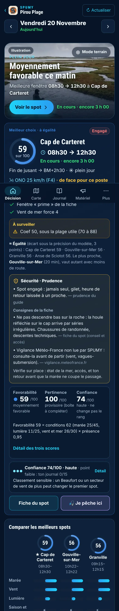
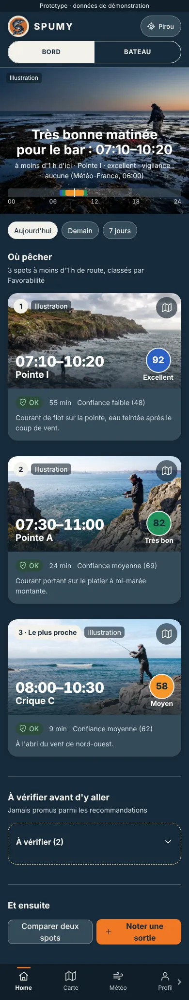
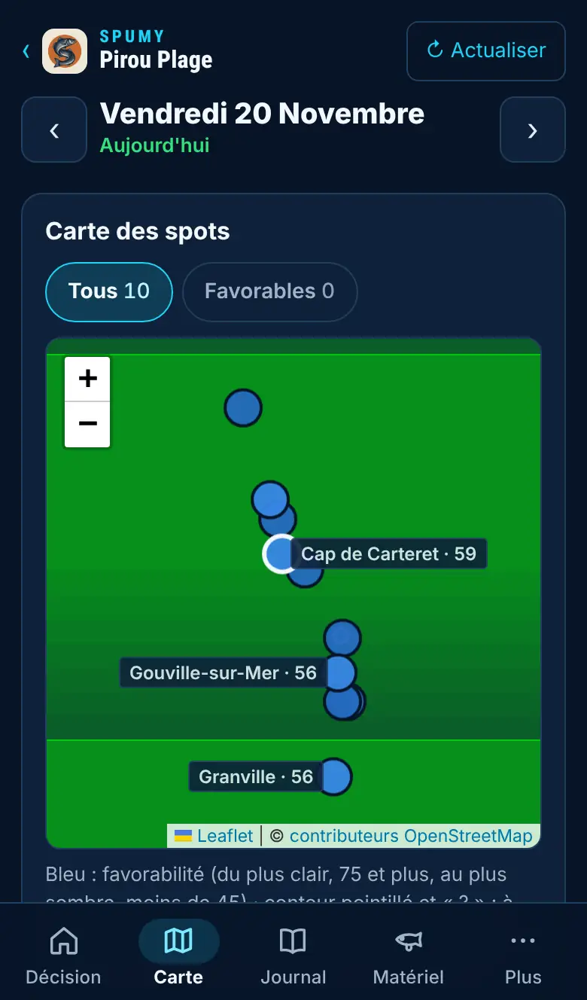
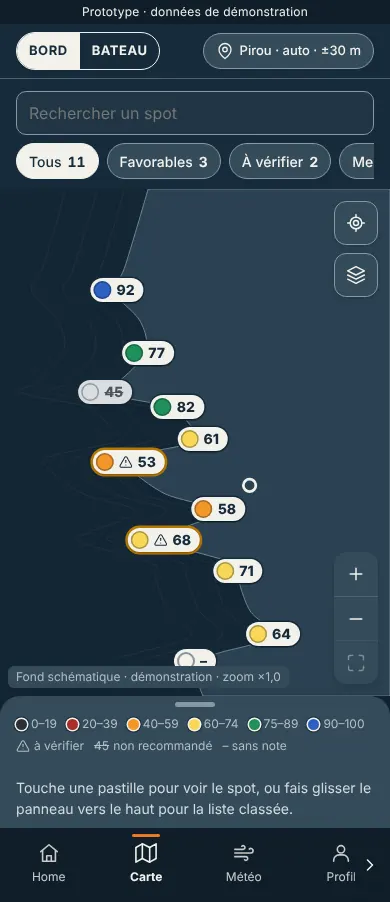
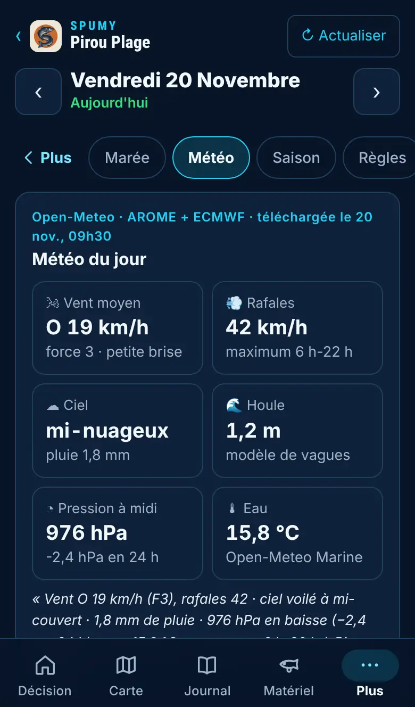
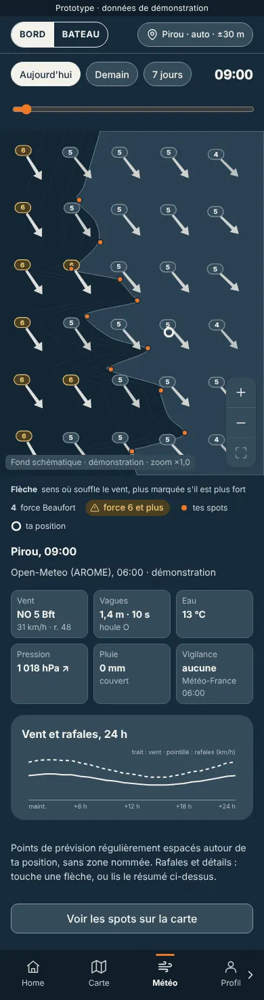
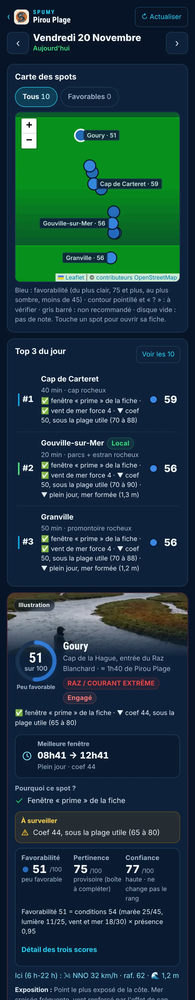
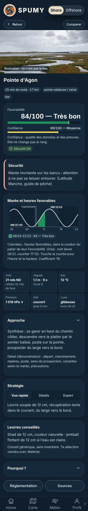
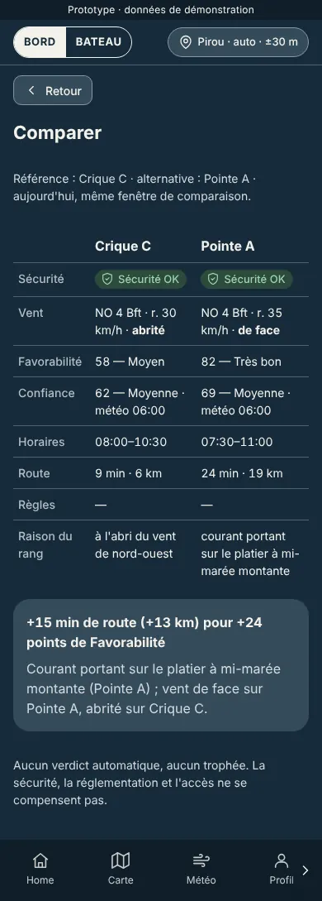
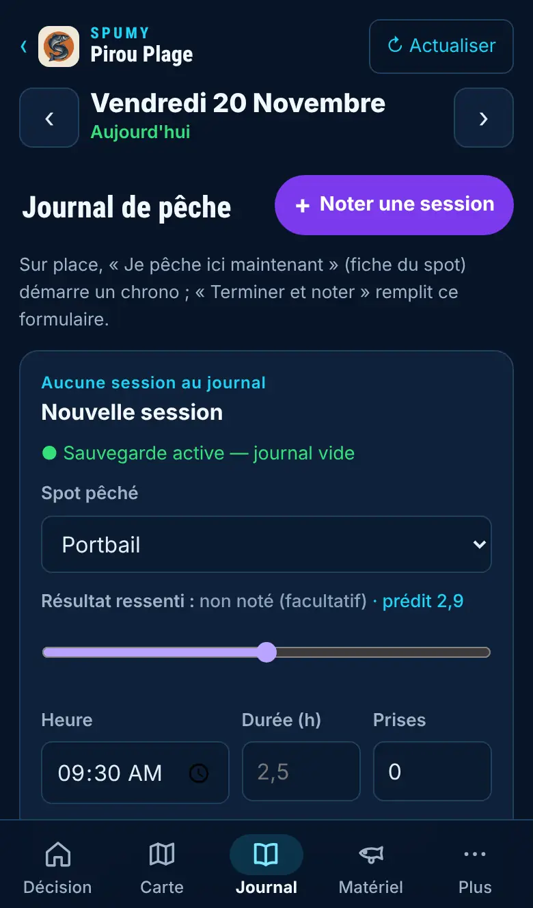
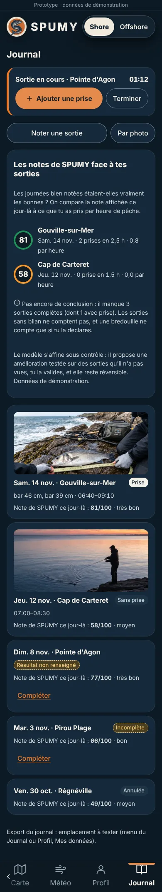
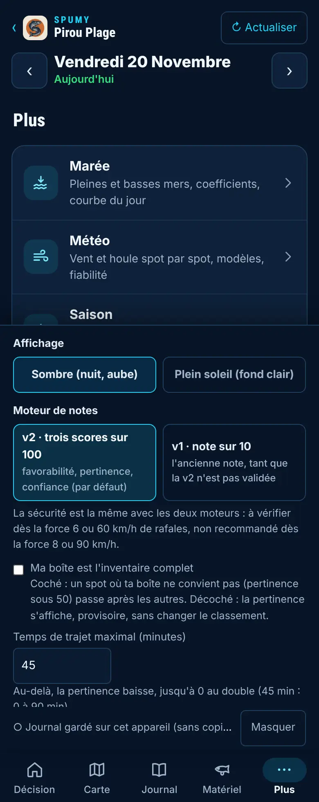
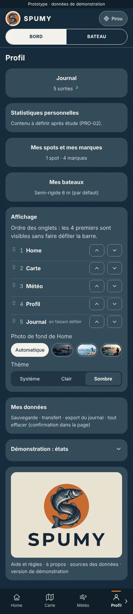
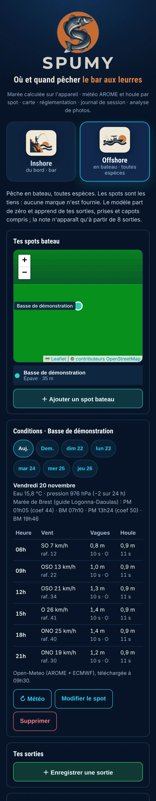
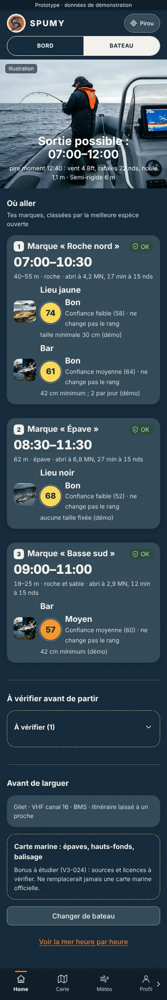
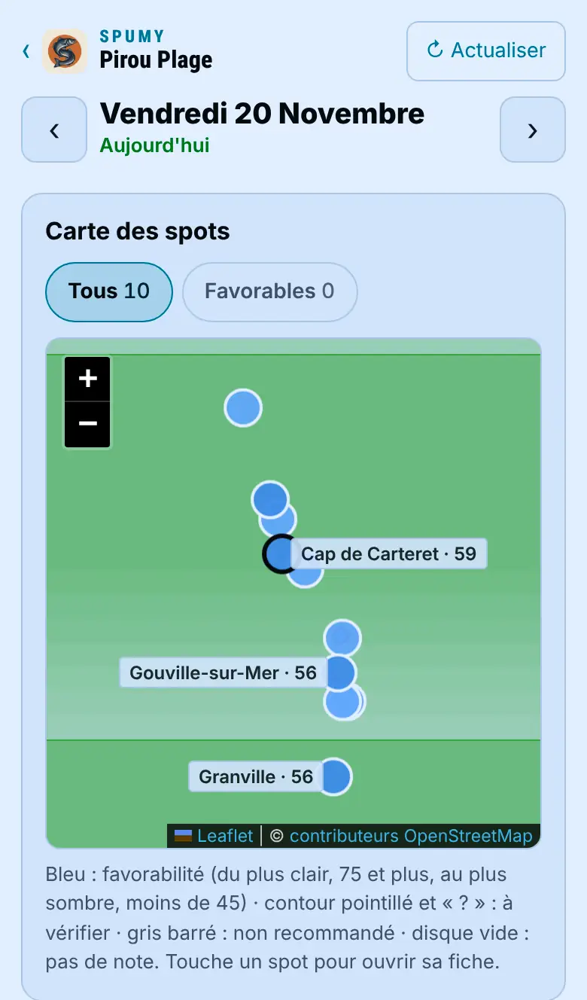
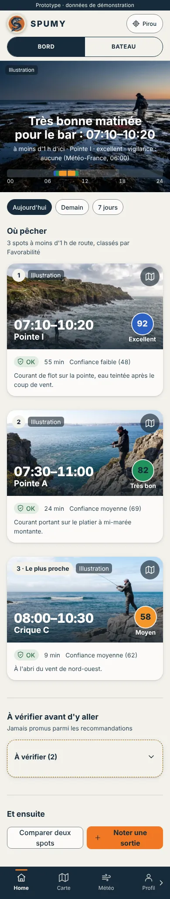
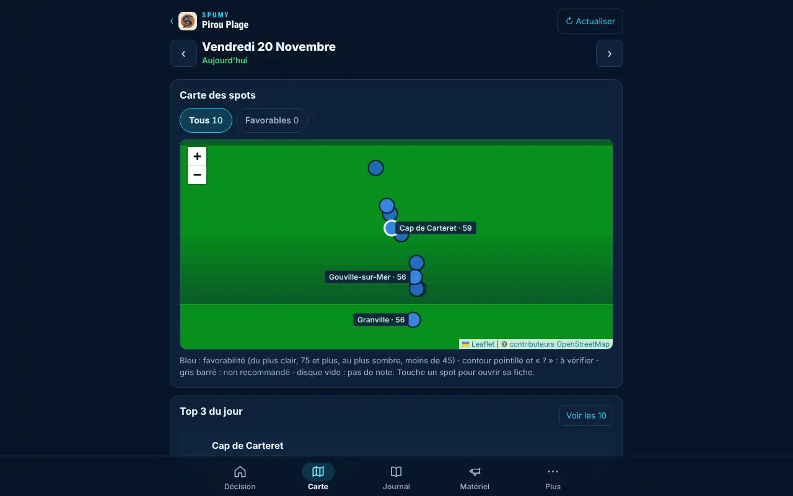
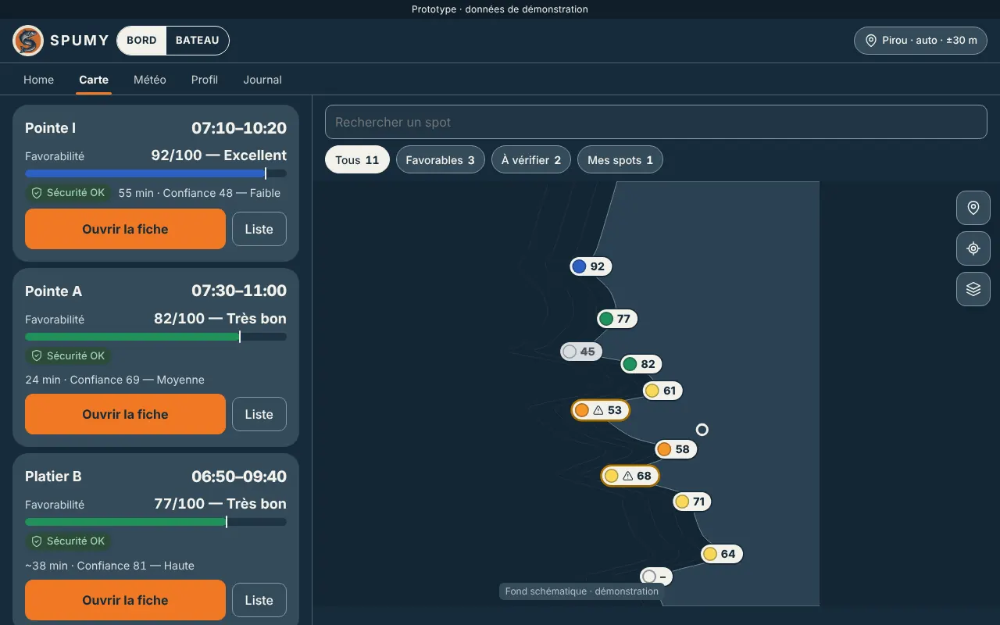
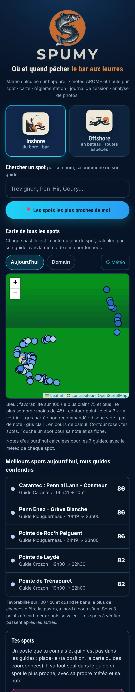
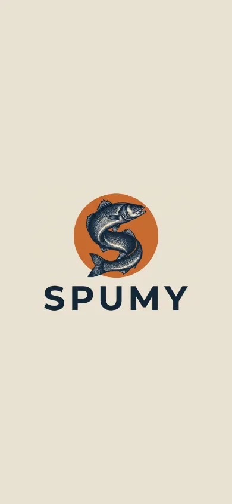
| Critère | Comment le vérifier |
|---|---|
| Mêmes écrans, mêmes conditions | Capture APRÈS à 390 × 844 px (et 320, 375, 1 280), nuit marine et clair, même route que la CIBLE. |
| Structure identique à la CIBLE | Mêmes sections, même ordre, mêmes composants ; tout écart passe par la gestion des changements. |
| Vraies données | Scores issus du moteur validé, sources et heures réelles ; aucune donnée de démonstration. |
| Accessibilité | axe-core sans violation grave ; cibles de 44 px ; 12 px au moins ; un h1 et un titre par écran. |
| Règles | Tests de traçabilité verts : Favorables, Confiance sans effet sur le rang, À vérifier, égalités, pénurie. |
| Marque | tests/brand.py vert ; un seul slogan, en tête de Home (V3-028) ; aucun « V2 » à l'écran. |